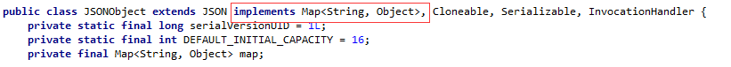
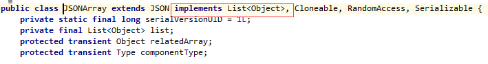

Fastjson 简介
Fastjson 是一个 Java 库，可以将 Java 对象转换为 JSON 格式，当然它也可以将 JSON 字符串转换为 Java 对象。
Fastjson 可以操作任何 Java 对象，即使是一些预先存在的没有源码的对象。
Fastjson 源码地址：https://github.com/alibaba/fastjson
Fastjson 中文 Wiki：https://github.com/alibaba/fastjson/wiki/Quick-Start-CN
Fastjson 特性
- 提供服务器端、安卓客户端两种解析工具，性能表现较好。
- 提供了 toJSONString() 和 parseObject() 方法来将 Java 对象与 JSON 相互转换。调用toJSONString方 法即可将对象转换成 JSON 字符串，parseObject 方法则反过来将 JSON 字符串转换成对象。
- 允许转换预先存在的无法修改的对象（只有class、无源代码）。
- Java泛型的广泛支持。
- 允许对象的自定义表示、允许自定义序列化类。
- 支持任意复杂对象（具有深厚的继承层次和广泛使用的泛型类型）。

下载和使用
你可以在 maven 中央仓库中直接下载：
https://repo1.maven.org/maven2/com/alibaba/fastjson/
或者配置 maven 依赖:
<dependency>
<groupId>com.alibaba</groupId>
<artifactId>fastjson</artifactId>
<version>x.x.x</version>
</dependency>
其中 x.x.x 是版本号，根据需要使用特定版本，建议使用最新版本。
将 Java 对象转换为 JSON 格式
定义以下 Person JavaBean:
实例
@JSONField(name = "AGE")
private int age;
@JSONField(name = "FULL NAME")
private String fullName;
@JSONField(name = "DATE OF BIRTH")
private Date dateOfBirth;
public Person(int age, String fullName, Date dateOfBirth) {
super();
this.age = age;
this.fullName= fullName;
this.dateOfBirth = dateOfBirth;
}
// 标准 getters & setters
}
可以使用 JSON.toJSONString() 将 Java 对象转换换为 JSON 对象：
@Before
public void setUp() {
listOfPersons.add(new Person(15, "John Doe", new Date()));
listOfPersons.add(new Person(20, "Janette Doe", new Date()));
}
@Test
public void whenJavaList_thanConvertToJsonCorrect() {
String jsonOutput= JSON.toJSONString(listOfPersons);
}
输出结果为：
[
{
"AGE":15,
"DATE OF BIRTH":1468962431394,
"FULL NAME":"John Doe"
},
{
"AGE":20,
"DATE OF BIRTH":1468962431394,
"FULL NAME":"Janette Doe"
}
]
我们还可以自定义输出，并控制字段的排序，日期显示格式，序列化标记等。
接下来我们更新 bean 并添加几个字段：
private int age;
@JSONField(name="LAST NAME", ordinal = 2)
private String lastName;
@JSONField(name="FIRST NAME", ordinal = 1)
private String firstName;
@JSONField(name="DATE OF BIRTH", format="dd/MM/yyyy", ordinal = 3)
private Date dateOfBirth;
以上代码中我们列出了基本参数类别，并使用 @JSONField 注解，以便实现自定义转换：
- format 参数用于格式化 date 属性。
- 默认情况下， FastJson 库可以序列化 Java bean 实体， 但我们可以使用 serialize 指定字段不序列化。
- 使用 ordinal 参数指定字段的顺序
这样，以上输出结果为：
[
{
"FIRST NAME":"Doe",
"LAST NAME":"Jhon",
"DATE OF BIRTH":"19/07/2016"
},
{
"FIRST NAME":"Doe",
"LAST NAME":"Janette",
"DATE OF BIRTH":"19/07/2016"
}
]
@JSONField
@JSONField 的作用对象:
- 1. Field
- 2. Setter 和 Getter 方法
注意：FastJson 在进行操作时，是根据 getter 和 setter 的方法进行的，并不是依据 Field 进行。
注意：若属性是私有的，必须有 set 方法。否则无法反序列化。
public @interface JSONField {
// 配置序列化和反序列化的顺序，1.1.42版本之后才支持
int ordinal() default 0;
// 指定字段的名称
String name() default "";
// 指定字段的格式，对日期格式有用
String format() default "";
// 是否序列化
boolean serialize() default true;
// 是否反序列化
boolean deserialize() default true;
}
2. JSONField 配置方式
FieldInfo 可以配置在 getter/setter 方法或者字段上。例如：
2.1 配置在 getter/setter 上
private int id;
@JSONField(name="ID")
public int getId() {return id;}
@JSONField(name="ID")
public void setId(int value) {this.id = id;}
}
2.2 配置在 field 上
@JSONField(name="ID")
private int id;
public int getId() {return id;}
public void setId(int value) {this.id = id;}
}
3. 使用format配置日期格式化
// 配置date序列化和反序列使用yyyyMMdd日期格式
@JSONField(format="yyyyMMdd")
public Date date;
}
4. 使用 serialize/deserialize 指定字段不序列化
@JSONField(serialize=false)
public Date date;
}
public class A {
@JSONField(deserialize=false)
public Date date;
}
5. 使用 ordinal 指定字段的顺序
默认 fastjson 序列化一个 java bean，是根据 fieldName 的字母序进行序列化的，你可以通过 ordinal 指定字段的顺序。这个特性需要 1.1.42 以上版本。
@JSONField(ordinal = 3)
private int f0;
@JSONField(ordinal = 2)
private int f1;
@JSONField(ordinal = 1)
private int f2;
}
FastJson 还支持 BeanToArray 序列化功能：
String jsonOutput= JSON.toJSONString(listOfPersons, SerializerFeature.BeanToArray);
输出结果为：
[
[
15,
1469003271063,
"John Doe"
],
[
20,
1469003271063,
"Janette Doe"
]
]
创建 JSON 对象
创建 JSON 对象非常简单，只需使用 JSONObject（fastJson提供的json对象） 和 JSONArray（fastJson提供json数组对象） 对象即可。
我们可以把JSONObject 当成一个 Map<String,Object> 来看，只是 JSONObject 提供了更为丰富便捷的方法，方便我们对于对象属性的操作。我们看一下源码。

同样我们可以把 JSONArray 当做一个 List<Object>，可以把 JSONArray 看成 JSONObject 对象的一个集合。

此外，由于 JSONObject 和 JSONArray 继承了 JSON，所以说也可以直接使用两者对 JSON 格式字符串与 JSON 对象及 javaBean 之间做转换，不过为了避免混淆我们还是使用 JSON。
public void whenGenerateJson_thanGenerationCorrect() throws ParseException {
JSONArray jsonArray = new JSONArray();
for (int i = 0; i < 2; i++) {
JSONObject jsonObject = new JSONObject();
jsonObject.put("AGE", 10);
jsonObject.put("FULL NAME", "Doe " + i);
jsonObject.put("DATE OF BIRTH", "2016/12/12 12:12:12");
jsonArray.add(jsonObject);
}
String jsonOutput = jsonArray.toJSONString();
}
输出结果为：
[
{
"AGE":"10",
"DATE OF BIRTH":"2016/12/12 12:12:12",
"FULL NAME":"Doe 0"
},
{
"AGE":"10",
"DATE OF BIRTH":"2016/12/12 12:12:12",
"FULL NAME":"Doe 1"
}
]
JSON 字符串转换为 Java 对象
现在我们已经学会了如何创建 JSON 对象，以及如何将 Java 对象转换为 JSON 字符串，接下来我们就需要了解如何解析 JSON：
public void whenJson_thanConvertToObjectCorrect() {
Person person = new Person(20, "John", "Doe", new Date());
String jsonObject = JSON.toJSONString(person);
Person newPerson = JSON.parseObject(jsonObject, Person.class);
assertEquals(newPerson.getAge(), 0); // 如果我们设置系列化为 false
assertEquals(newPerson.getFullName(), listOfPersons.get(0).getFullName());
}
我们可以使用 JSON.parseObject() 将 JSON 字符串转换为 Java 对象。
注意反序列化时为对象时，必须要有默认无参的构造函数，否则会报异常:
com.alibaba.fastjson.JSONException: default constructor not found.
以下是简单的实例测试：
Person [age=20, fullName=John Doe, dateOfBirth=Wed Jul 20 08:51:12 WEST 2016]
@JSONField deserialize 可选项可以指定字段不反序列化。
@JSONField(name = "DATE OF BIRTH", deserialize=false) private Date dateOfBirth;
输出结果为：
Person [age=20, fullName=John Doe, dateOfBirth=null]
使用 ContextValueFilter 配置 JSON 转换
在某些场景下，对Value做过滤，需要获得所属JavaBean的信息，包括类型、字段、方法等。在fastjson-1.2.9中，提供了ContextValueFilter，类似于之前版本提供的ValueFilter，只是多了BeanContext参数可用。
public void givenContextFilter_whenJavaObject_thanJsonCorrect() {
ContextValueFilter valueFilter = new ContextValueFilter () {
public Object process(
BeanContext context, Object object, String name, Object value) {
if (name.equals("DATE OF BIRTH")) {
return "NOT TO DISCLOSE";
}
if (value.equals("John")) {
return ((String) value).toUpperCase();
} else {
return null;
}
}
};
String jsonOutput = JSON.toJSONString(listOfPersons, valueFilter);
}
以上实例中我们隐藏了 DATE OF BIRTH 字段，并过滤名字不包含 John 的字段：
[
{
"FULL NAME":"JOHN DOE",
"DATE OF BIRTH":"NOT TO DISCLOSE"
}
]使用 NameFilter 和 SerializeConfig
NameFilter: 序列化时修改 Key。
SerializeConfig：内部是个map容器主要功能是配置并记录每种Java类型对应的序列化类。
public void givenSerializeConfig_whenJavaObject_thanJsonCorrect() {
NameFilter formatName = new NameFilter() {
public String process(Object object, String name, Object value) {
return name.toLowerCase().replace(" ", "_");
}
};
SerializeConfig.getGlobalInstance().addFilter(Person.class, formatName);
String jsonOutput =
JSON.toJSONStringWithDateFormat(listOfPersons, "yyyy-MM-dd");
}
实例中我们声明了 formatName 过滤器使用 NameFilter 匿名类来处理字段名称。 新创建的过滤器与 Person 类相关联，然后添加到全局实例，它是 SerializeConfig 类中的静态属性。
现在我们可以轻松地将对象转换为JSON格式。
注意我们使用的是 toJSONStringWithDateFormat() 而不是 toJSONString() ，它可以更快速的格式化日期。
输出结果：
[
{
"full_name":"John Doe",
"date_of_birth":"2016-07-21"
},
{
"full_name":"Janette Doe",
"date_of_birth":"2016-07-21"
}
] 
点我分享笔记